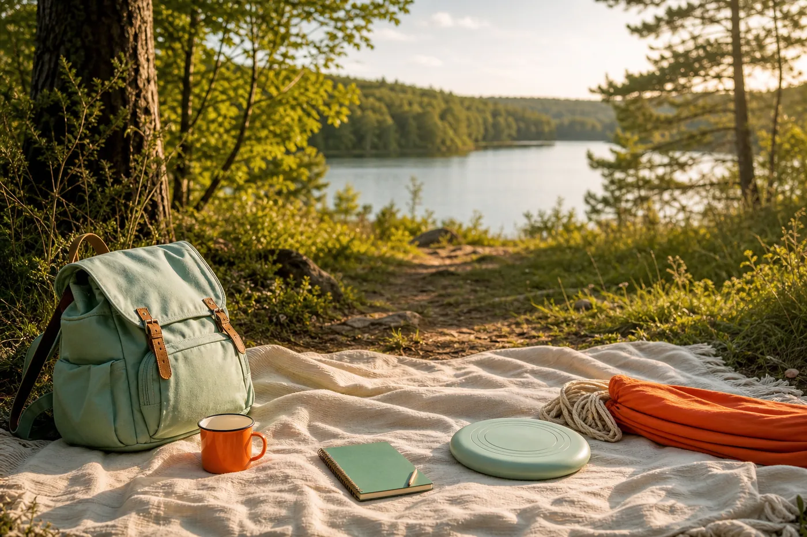

Leitfaden · 12 Minuten
Gewohnheiten aufbauen: Der vollständige Leitfaden
Fundierte Grundlagen und sechs konkrete Schritte für einen realistischen Start.
Leitfaden lesen →Redaktionell veröffentlicht
Verständliche Hintergründe, praktische Schritte und ehrliche Fragen – ohne unnötigen Optimierungsdruck.
Alle Wissensbereiche entdecken →Leitfaden · 12 Minuten
Fundierte Grundlagen und sechs konkrete Schritte für einen realistischen Start.
Leitfaden lesen →Gewohnheiten · 7 Minuten
Warum winzige Schritte oft besser funktionieren als große Vorsätze.
Artikel lesen →
Journaling · 8 Minuten
Eine einfache Methode für deinen Einstieg, auch wenn du wenig Zeit hast.
Artikel lesen →
Bewegung · 8 Minuten
So entsteht aus zehn realistischen Minuten eine alltagstaugliche Routine.
Artikel lesen →
Kreativität · 9 Minuten
Ideen zum Ausprobieren, ohne daraus ein neues Leistungsprojekt zu machen.
Artikel lesen →
Erlebnisse · 8 Minuten
Mehr Natur und Neugier ohne große Reiseplanung oder teure Ausrüstung.
Artikel lesen →Lernen · 7 Minuten
Wie Lernen wieder freiwillig, greifbar und motivierend werden kann.
Artikel lesen →